Laser-cut project
The second individual project of the semester is to make a design in Fusion360, or similar, on a DXF format and cut with a laser cutter. One demand of the project is that the design is pressfit and has finger joints. A small group project, finding the kerf for the laser-cutter used for the individual project, is included in the design chapter.
Finding inspiration
I wanted the project I made to be useful. A simple, smaller item would maybe be the quickest or easiest way to execute this project. I decided that I did not want to make „waste“ by making something non-useful and also thought the process of it would be more rewarding if the item would be useful.
I did a lot of brainstorming and came to the conclusion to make a stepping stool for my dog, which is a very small Yorkshire Terrier that can not jump up on to the sofa or bed. I looked for inspiration on Etsy and Amazon, where you can buy a similar thing as what I had imagined. Unfortunately I did not find similar laser cut projects until I found a dog house that had a ladder leading up to it‘s roof. After I had spent way too much time looking for some similar projects I decided to just start designing with a similar item that is not pressfit or laser cut.
Search words used for information gathering: html setup, pet-steps, laser cut dog house, stairs for small dog.
Designing the steps
Below there is a photo of steps that I used for reference in measurements. The measurements are in inches so I translated them to understand roughly the height, length and width needed for the steps to recach the seat of an average couch or bed (from 30-14 cm), for the whole item to be steady and for each step to be long enough so that a dog with short legs can use the steps without any problem. I also wanted it to have a sort of railing on the sides to guide the dog straight up the stairs, so that the steps vill not be sliding to the sides as it jumps on or off the steps.
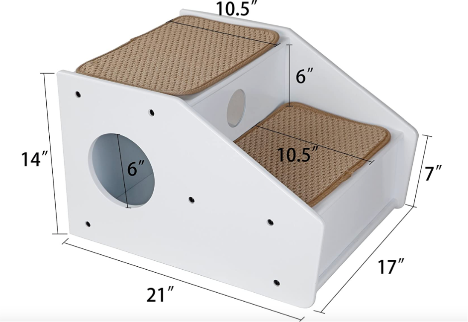The table below contains refenece measurements, translation from inches to cm, porportions of the parts and finally the measurents that are used for the project parameters.
Table 1: Parameter planning
| Part | Inches | Centimeters | Porportions [7:1] | Measurements used [mm] |
|---|---|---|---|---|
| Height | 14 | 35,56 | 2 | 350 |
| Height above step 1 | 7 | 17,78 | 1 | Step height+75 |
| Length | 21 | 53,34 | 3 | 450 |
| Width | 17 | 43,18 | 1,5-2 | 300 |
| Step height 1 | 6 | 15,24 | 1 | 150 |
| Step height 2 | 12 | 30,48 | 2 | 2 * Step height 1 |
| Step length 1 | 10,5 | 26,67 | 1,5 | 210 |
| Step length 2 | 10,5 | 26,67 | 1,5 | Step length 1 + Thickness |
| Thickness | - | - | - | 40 |
Planning the execution
The first step of the execution of the project was adding parameters. A video suggested by the course teacher that can be seen below was used as a guide.
The parameters are rather many in this project. As will be mentioned later on in these instructions the front of the second step needed it‘s own parameter and a few different finger sizes had to be made. Below is a photo with a listing of all parameters and current values.
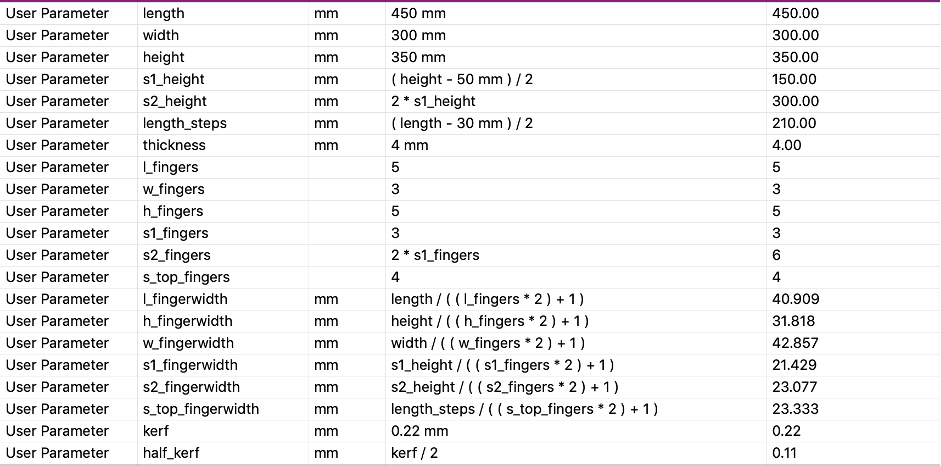One of the parameters is kerf. This measurement was found as a part of a group project. The kerf is used to maximize the precision of the laser cutting by taking in to consideration how much the laser cuts of the wood on either side of the cutting line, that is not intended. Step-by-step description of finding the kerf is listed in Icelandic on this page.
Before starting to draw the design the approximate look of the steps was planned, specifically the side railings and how the back and bottom should fit the steps. A desicion was made to make the bottom panel slightly visible in the front, just like in the photo above. The railings were meant to be smooth and follow the flow of the steps, unlike the one shown in the reference photo above
Drawing
The first few steps in the drawing the design were drawing a simple box with two side panels, a back panel and a bottom panel. The same video as above was used to make this part of the design and get to know Fusion360 a bit better.
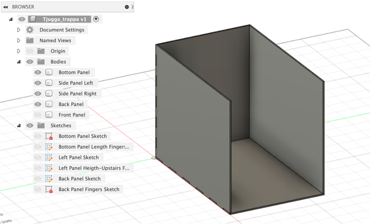Next the front of the first step was added to the drawing. The sketch was made on the Y-Z axiz and extruded to be stationed 30 mm from the front edge of the bottom panel.
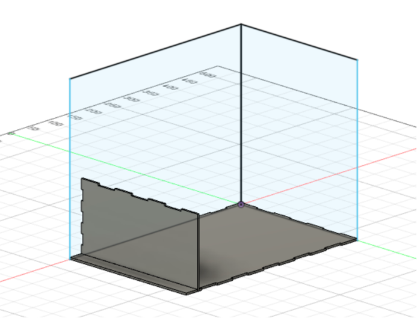Following the front was the top of the first step.
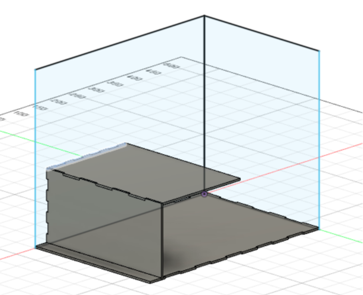After that the same two components were added for the second step. This is where the first problems came up, as accounting the thickness of the material for the length of the step had not been done, so it did not reach through the pack panel. This was fixed. After that, when the step had been added the thought came up that maybe the item was not sturdy enough to be stepped on by a dog (knowledge of the strength of the material was lacking). This resulted in making the front panel of the second step not only reach the top of the forst step but all the way down to the bottom panel, just in case!
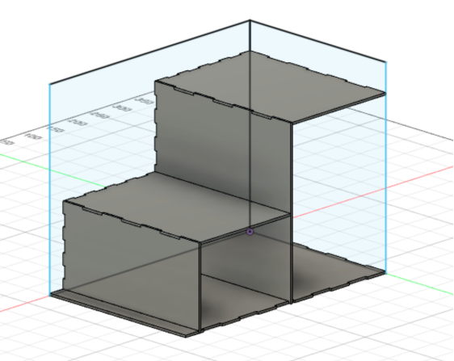As seen in the photos fingers were added to the panels with each addition, just like in the video mentioned above, apart from the right side. This is because the right side will be a replica of the left one, made after all the finger gaps are made. Then the side panel will be used to cut the fingers on all panels that will be fitted with that side.
The next step was making a cut-out on the side panel to resemble a railing. A sketch was added by drawing a rectangle in the corner of the panel and making a slight fillet (20mm rad) in the inner corner of it as seen in the photo below. The cut-out is set to be half of the step‘s height away form the top of the first step as well as the front af the second step.
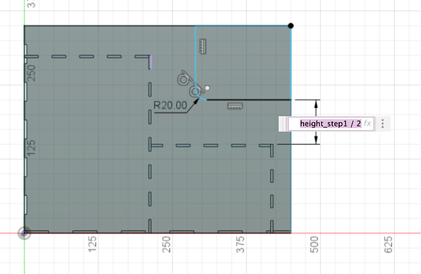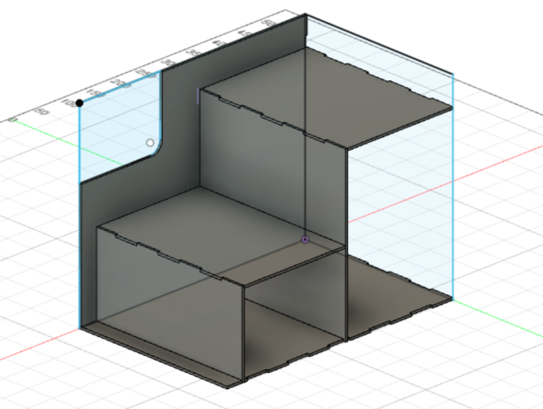
After that a fillet with a 50 mm radius was added to both of the sharp corners to make the railing more sleek.
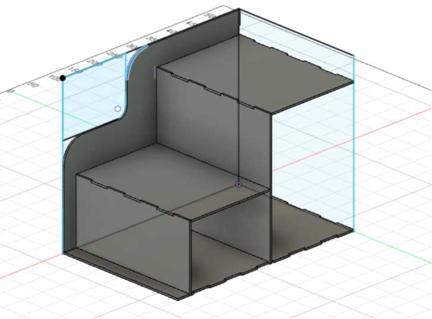Finally the right side panel was made with an extrusion of the left one.
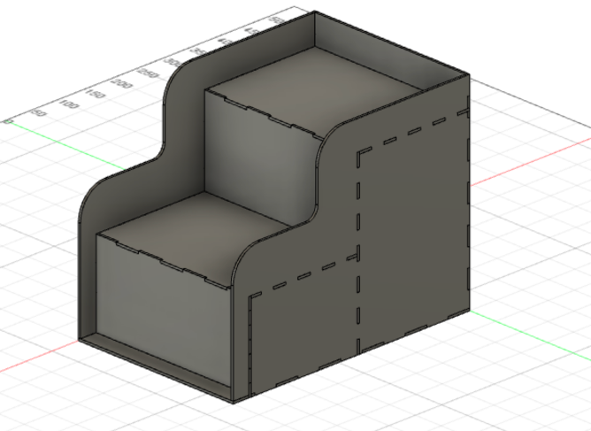Preparing for CAM
A very helpful reference video was used for this part, and can be found below.
After laying all the bodies flat the design looked like this:
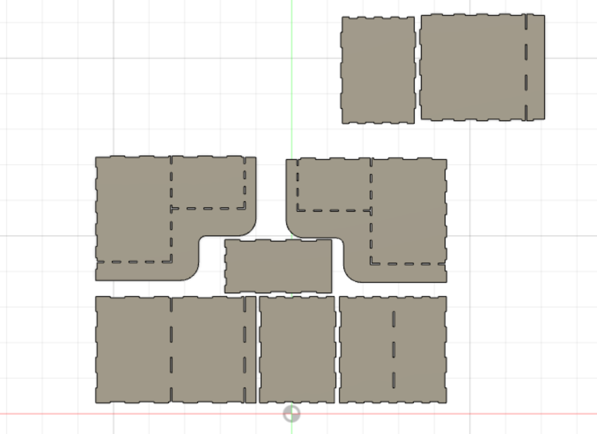The next step, which the teacher explained in a simple way, was to make a sketch of the outlines of all the bodies. After the sketch is made every outline is chosen and offset by kerf/2. How the sketch looks after the offset has been added can be seen below, which admittedly is rather messy.
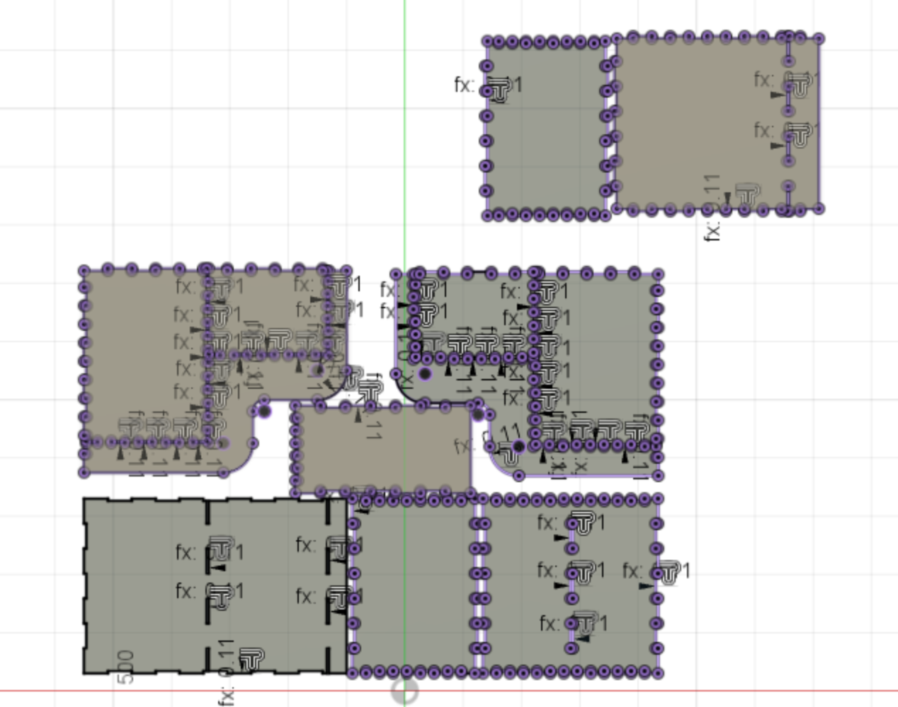Now the sketch can be right clicked, in the Browser on the left side of the Fusion360 window, and should be able to be exported. The following window pops up.
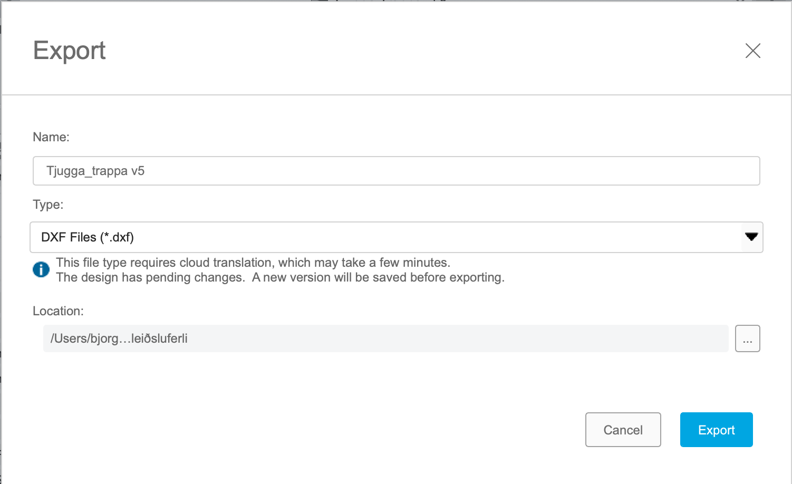There the Type: DXF Files (*.dxf) is chosen. Now the file is ready to be opened in InkScape for printing (or cutting in fact). There the bodies are placed on a suitably sized sheet, according to the size of the wood panel. This is where a new problem came up, as the plan was to cut the steps out of one 1000x700mm panel and one 600x400mm panel. Unfortunately almost all panels had been used up so improvising was the only way to finish the project. The bodies were split up and placed on four panels in total; one half-used 1000x700mm panel that can be seen below, one 600x400mm panel that another student had carved into instead of cutting and two 500x400mm panels.
Preparing the laser for cutting
The file is transferred to the laser-cutter's assigned computer via USB. Before starting the cutting process the laser has to be adjusted along the x-, y- and z- axis as well as set to cut, not carve. Below is a photo of the manual focus tool, used to adjust the z-axis and following are the speed, power and frequency settings used to cut plywood.
The x- and y-axis are then adjusted with a kind of a joystick, and then the cutting is started. The control board of the laser can be seen below.
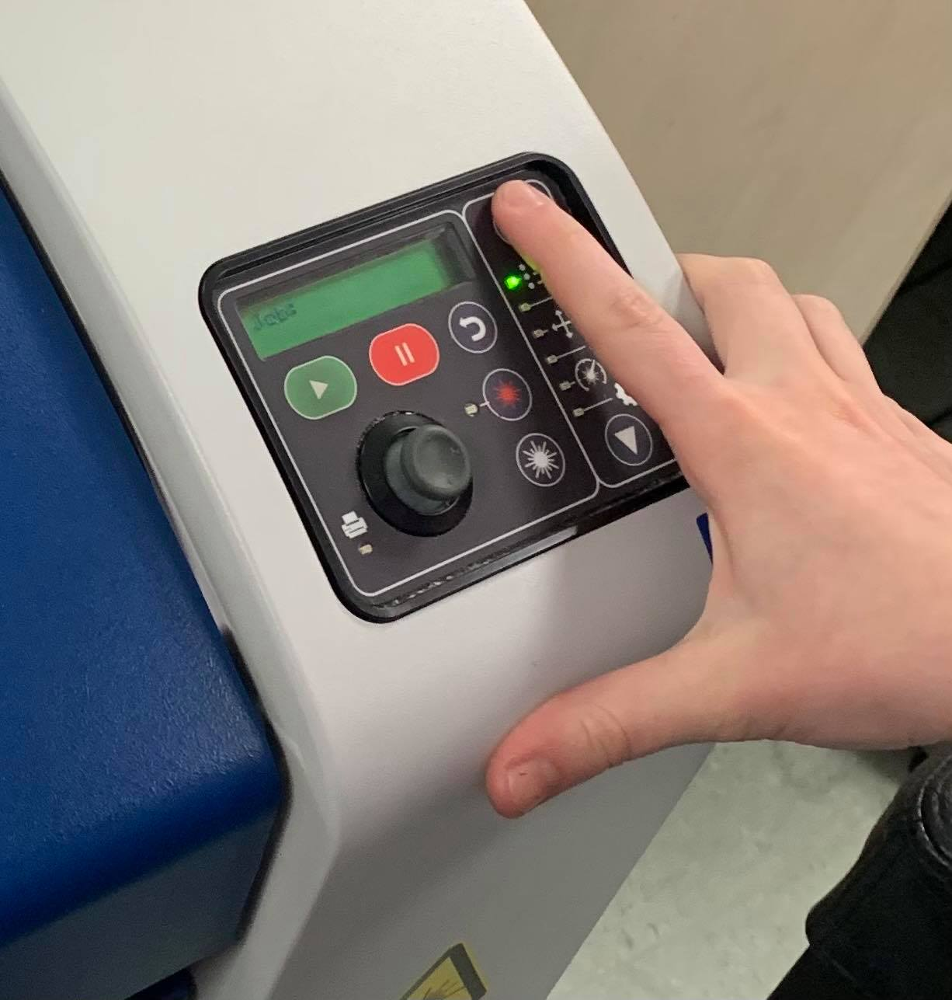Cutting
The cutting of the half-used 1000x700mm panel can be seen below.
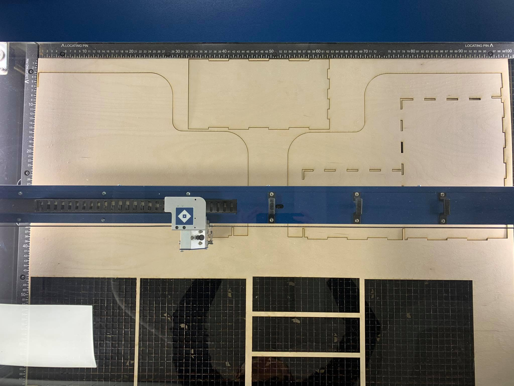The only complications that came up regarding the change of the panel sizes was that the fingers of two one the bodies did not fit on the panel and another one had "lost" the fingers when the .dxf file was exported. In the photo below how one of them was fixed can be seen, as the laser was about to start cutting out the fingers that were needed. The other one was the top of the second step and worked out fine as was.
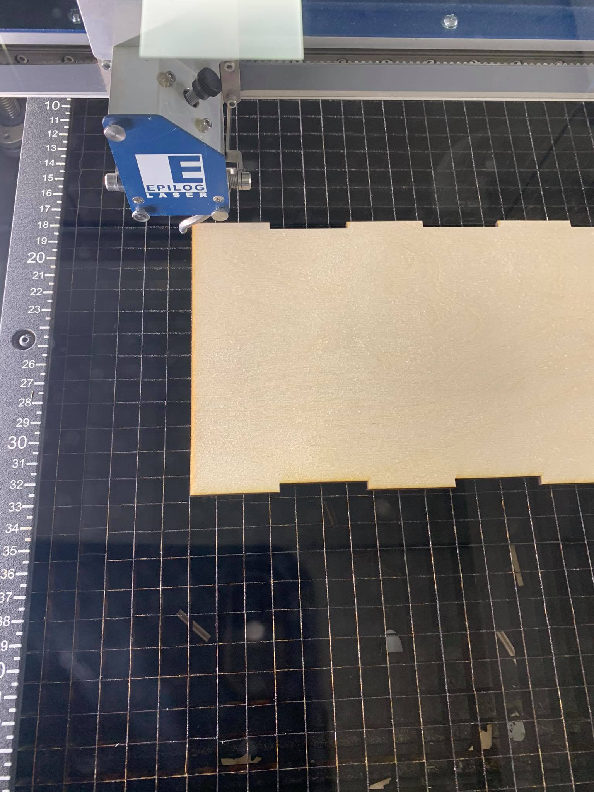Assembly
The assembly, due to the condition of the panels, did not go smoothly. The bottom body was very warped and made it impossible for the steps to come together on all sides. After all the work it did not sound good to have to glue the design together for it to hold. After a short search for ways to unwarp it a possible solution was found. Here is a link of the page that had was used before starting the process of (hopefully) unwarping the panel: 3 ways to unwarp wood. Essentially some version of all three methods were used. Firstly the panel was wrapped in wet paper towels, then in siran wrap. Then the whole thing was warmed up with a hairdryer before putting pressure on it with heavy books. In the picture below the panel can be seen as it sat for about 24 hours.
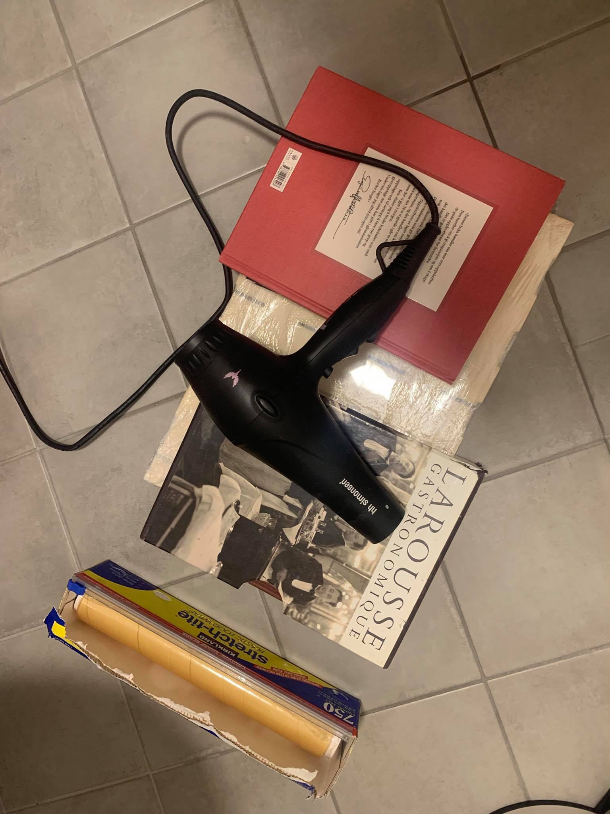The result was better than expected and the steps came together in the end. The process was inspiring and I learnt alot of new things. A few ideas of fun projects came to the surface, that might even be realized in the future.
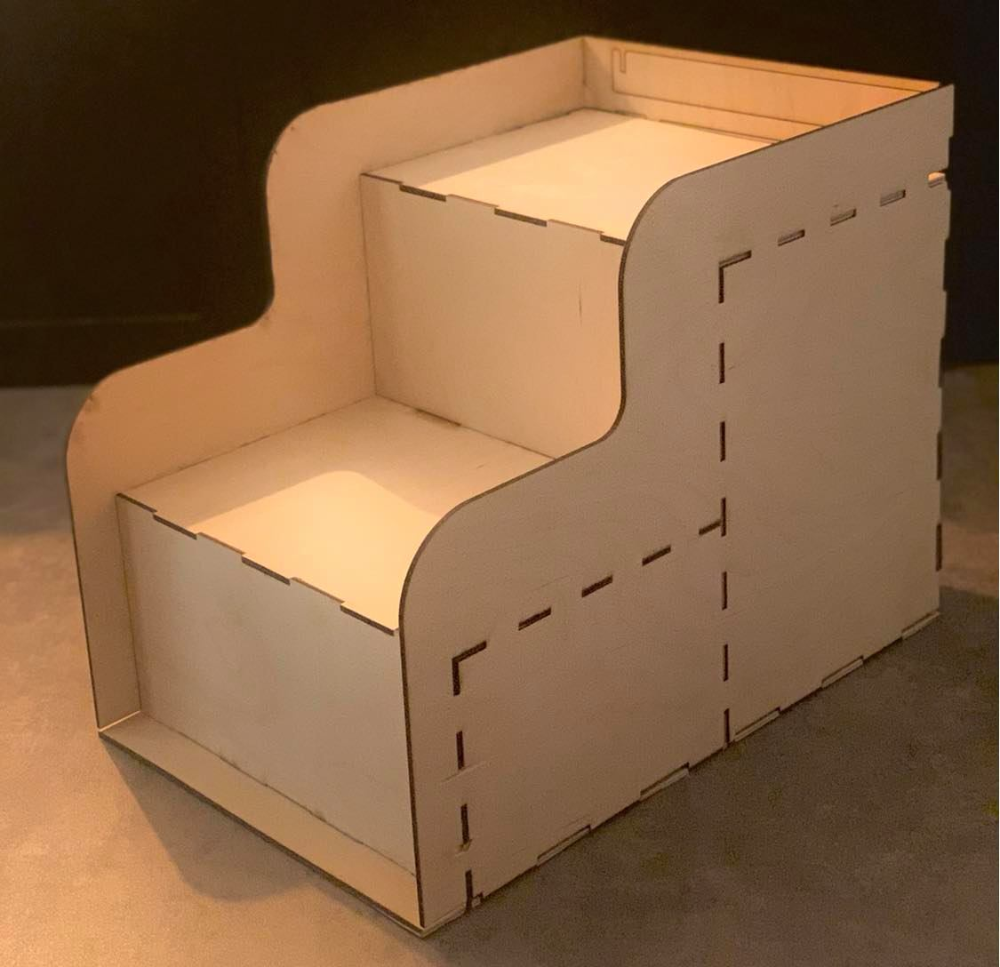